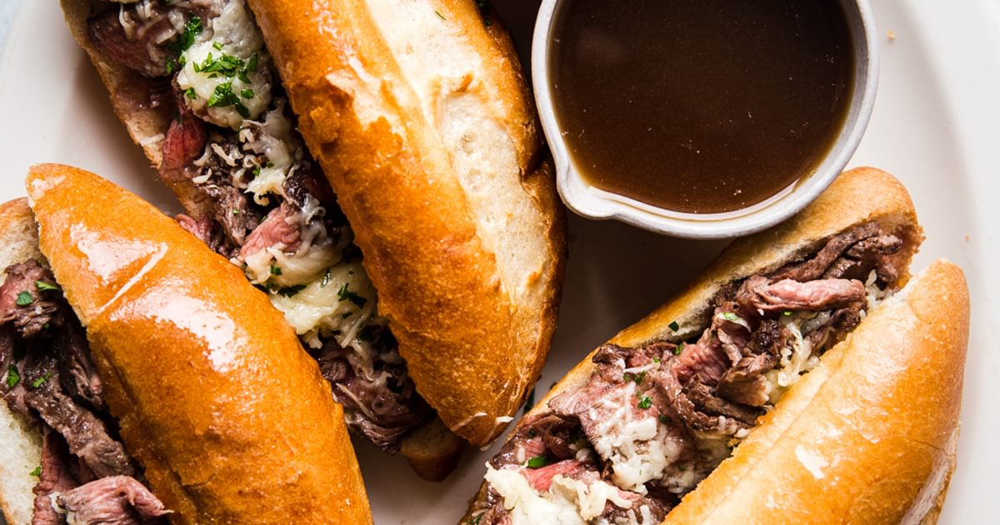

Jon Lee Steak Hoagie

The Jon Lee Steak Hoagie was born before my time, but I was fortunate enough to come along in an appropriate window of opportunity.
This sandwich was a favorite off menu item of the employees of Attractions restaurant, utilized to shake up the monotony of on menu items or as a mild to moderate hangover cure.
The sandwich gets its name from its creator, Attractions kitchen manager Jon Lee.
This divine creation takes a traditional beef hoagie patty and incorporates intense flavors from all directions, including buffalo sauce, cajun mayo, garlic herb butter, and two kinds of cheese.
Ingredients
- 1 beef hoagie patty
- 1 steak hoagie roll
- 1/2 cup buffalo sauce
- 1/4 cup mayo
- 2 tsp cajun seasoning
- 1/2 cup shredded iceberg lettuce
- 2 slices of cheddar cheese
- 2 slices of provolone cheese
- garlic herb butter for brushing the hoagie roll
Steps
- Lightly toast hoagie roll in toaster or over, set aside
- Combine mayo and cajun seasoning, stir, set aside
- Place hoagie patty on hot grill for 2-3 minutes
- Flip hoagie patty, and brush generously with buffalo sauce
- After 1-2 minutes, flip patty again, and brush generously with buffalo sauce
- While patty continues to cook, brush both top and bottom pieces of roll with garlic herb butter
- Place roll pieces directly on grill
- Place the four slices of cheese on the upward facing top section of the roll, alternating cheddar and provolone across the length of the roll
- Grill until a golden brown crusts forms on the grill facing roll pieces (this may happen very quickly, and it is easy to burn, so please pay close attention)
- Remove roll pieces and set aside, cheese will continue to melt
- Flip hoagie patty two additional times, brushing with buffalo sauce each time, letting each side briefly grill for 20-30 seconds
- Spread cajun seasoning and mayo mixture on the ungrilled bottom section of the roll
- Add shredded lettuce on top of mayo spread
- Remove patty from grill and place on top of shredded lettuce
- Place top section of hoagie roll on top of patty
- Cut in half, grab extra napkins, sit down, take a deep breath
- Enjoy this marvelous creation, goes well with a side of fries